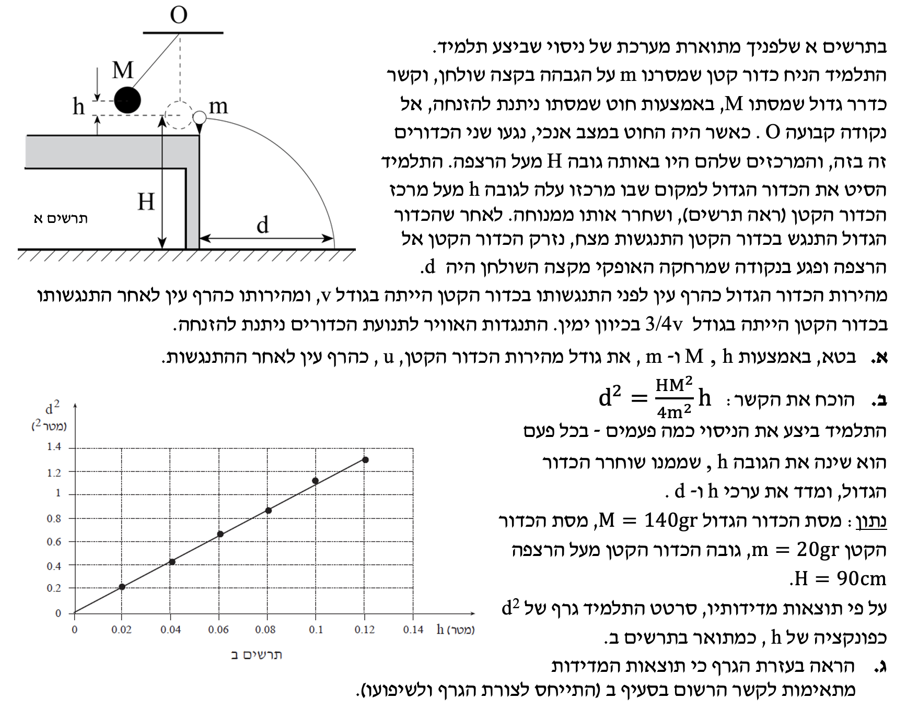

תלמידים יקרים, לפנינו שאלת בגרות קלאסית המשלבת שימור אנרגיה, התנגשות (שימור תנע) וזריקה אופקית. נפתור אותה יחד צעד אחר צעד, תוך הקפדה על חוקי הפיזיקה והצגת כל השלבים הנדרשים. לא נדלג על אף שלב מחשבתי!
נוסח השאלה

תמונת השאלה המקורית:
לא נמצאה תמונה בשם question-image.png באותה תיקייה.
סעיף א': מציאת מהירות הכדור הקטן לאחר ההתנגשות
מה נתון:
כדור גדול שמסתו \( M \) משוחרר ממנוחה (מהירות התחלתית אפס) מגובה \( h \).
כדור קטן שמסתו \( m \) נמצא במנוחה על השולחן.
לאחר ההתנגשות, הכדור הגדול ממשיך באותו כיוון עם מהירות שגודלה היא \( \frac{3}{4}v \) (כאשר \( v \) היא מהירותו רגע לפני ההתנגשות).
מה מחפשים:
לבטא את גודל מהירות הכדור הקטן, \( u \), כהרף עין לאחר ההתנגשות, באמצעות הפרמטרים \( M, m, h, g \).
תרשים המטוטלת ותרשים כוחות (FBD) בנקודה הנמוכה
תרשים כוחות אופקיים (FBD) בזמן ההתנגשות (הכוחות הפנימיים)
נוסחאות מהדף:
$$ W_{nc} = \Delta E_k + \Delta E_p $$
$$ E_k = \frac{mv^2}{2} $$
$$ m_1 v_1 + m_2 v_2 = m_1 u_1 + m_2 u_2 $$
הצבה ופתרון:
שלב 1: מציאת מהירות הכדור הגדול לפני ההתנגשות
נבחן את תנועת הכדור הגדול (\( M \)) מרגע שחרורו ועד לנקודה הנמוכה ביותר. כפי שרואים בתרשים הכוחות (FBD) השמאלי, הכוחות הפועלים עליו הם כוח הכובד (\( Mg \)) וכוח המתיחות מהחוט (\( T \)).
האם מותר להשתמש בשימור אנרגיה? כוח המתיחות בחוט (\( T \)) תמיד מאונך לכיוון ההתקדמות המשיקי של הכדור בכל רגע. כיוון שכך, כוח זה אינו מבצע עבודה (\( W_T = 0 \)). לכן, עבודת הכוחות הלא-משמרים היא אפס, והאנרגיה המכנית הכוללת של הכדור נשמרת.
נבחר את רמת הייחוס לאנרגיה פוטנציאלית כובדית בגובה השולחן. נציב בנוסחת שימור האנרגיה:
המסה \( M \) מצטמצמת בשני האגפים. נבודד את גודל המהירות \( v \):
\[ v^2 = 2gh \implies v = \sqrt{2gh} \]
זוהי מהירות הכדור הגדול רגע לפני ההתנגשות.
שלב 2: ניתוח ההתנגשות בין הכדורים
בזמן ההתנגשות הקצרה, הכדורים מפעילים כוחות זה על זה. נתבונן בתרשים הכוחות (FBD) הימני: בציר האופקי, אלו הם הכוחות היחידים שפועלים. מכיוון שאלו כוחות פנימיים המבטלים זה את זה (לפי החוק השלישי של ניוטון: פעולה ותגובה), סכום הכוחות החיצוניים על מערכת שני הכדורים בציר זה הוא אפס. לכן, התנע הכולל של המערכת נשמר.
כאשר אנו מזהים התנגשות ללא כוחות חיצוניים בציר התנועה, אנו יכולים להשתמש ישירות בנוסחת שימור התנע החד-ממדית מדף הנוסחאות. חובה תמיד להגדיר כיוון חיובי לפני ההצבה ולהקפיד על סימני המהירויות!
נבחר כיוון חיובי ימינה. נגדיר את הגדלים עבור שני הכדורים ונציב בנוסחת שימור התנע:
כדור 1 (המסה הגדולה): \( m_1 = M \), מהירות לפני ההתנגשות \( v_1 = v \), מהירות אחרי ההתנגשות \( u_1 = \frac{3}{4}v \) (חיובית, כי ממשיך באותו כיוון).
כדור 2 (המסה הקטנה): \( m_2 = m \), מהירות לפני ההתנגשות \( v_2 = 0 \), מהירות אחרי ההתנגשות נסמן כ- \( u_2 = u \).
\[ m_1 v_1 + m_2 v_2 = m_1 u_1 + m_2 u_2 \]
\[ M \cdot v + m \cdot 0 = M \cdot \left(\frac{3}{4}v\right) + m \cdot u \]
נעביר אגפים כדי לבודד את מהירות הכדור הקטן \( u \):
\[ Mv - \frac{3}{4}Mv = mu \]
\[ \frac{1}{4}Mv = mu \]
\[ u = \frac{M \cdot v}{4m} \]
לסיום, נציב את הביטוי שמצאנו ל- \( v \) בשלב 1:
\[ u = \frac{M}{4m}\sqrt{2gh} \]
סעיף ב': חקירת הזריקה האופקית והוכחת הקשר
מה נתון:
הכדור הקטן עוזב את השולחן במהירות אופקית שגודלה \( u \) שחישבנו.
השולחן נמצא בגובה \( H \) מעל הרצפה.
הכדור פוגע ברצפה במרחק אופקי \( d \) משפת השולחן.
מה מחפשים:
להוכיח מתמטית את הקשר: \( d^2 = \frac{M^2 H}{4m^2}h \).
מערכת הצירים, מסלול הזריקה ותרשים כוחות בזמן מעוף
נוסחאות מהדף:
$$ y = y_0 + v_{0y}t + \frac{1}{2}a_y t^2 $$
$$ x = x_0 + v_{0x}t + \frac{1}{2}a_x t^2 $$
הצבה ופתרון:
כדי לנתח תנועה בשני ממדים (זריקה אופקית), נפריד את התנועה לשני צירים בלתי תלויים. נקבע את ראשית הצירים בנקודת העזיבה של השולחן. ציר \( x \) חיובי ימינה, וציר \( y \) חיובי כלפי מטה.
מושג התאוצה: כפי שרואים בתרשים הכוחות (FBD) בזמן המעוף, הכוח היחיד הפועל על הגוף (בהזנחת התנגדות האוויר) הוא כוח הכובד, המכוון כלפי מטה. גודלה של תאוצת הנפילה החופשית, \( g \), הוא תמיד גודל חיובי ושווה ל- \( 10 \text{ m/s}^2 \).
מכיוון שבחרנו את ציר \( y \) כלפי מטה (באותו כיוון של כוח הכובד), התאוצה בציר זה היא חיובית: \( a_y = +g \). גודל המהירות של הגוף בציר האנכי ילך ויגדל ככל שהוא ייפול.
ניתוח ציר Y (תנועה שוות תאוצה):
נציב את הנתונים במשוואת המקום-זמן עבור הציר האנכי כדי למצוא את זמן הנפילה \( t \):
מיקום התחלתי: \( y_0 = 0 \)
מיקום סופי ברצפה: \( y = H \)
מהירות התחלתית אנכית: \( v_{0y} = 0 \) (הזריקה היא אופקית לחלוטין)
תאוצה אנכית: \( a_y = +g \)
\[ H = 0 + 0 \cdot t + \frac{1}{2}g t^2 \]
\[ H = \frac{1}{2}g t^2 \]
נבודד את ריבוע הזמן (יהיה נוח יותר בהמשך לא להוציא שורש):
\[ t^2 = \frac{2H}{g} \]
ניתוח ציר X (תנועה שוות מהירות):
בציר האופקי לא פועלים כוחות ולכן אין תאוצה (\( a_x = 0 \)). נציב במשוואת המקום-זמן:
מיקום התחלתי: \( x_0 = 0 \)
מיקום סופי ברצפה: \( x = d \)
מהירות אופקית קבועה: \( v_{0x} = u \) (שמצאנו בסעיף א')
\[ d = 0 + u \cdot t + 0 \]
\[ d = u \cdot t \]
שילוב המשוואות (אלגברה):
נעלה את משוואת ציר \( x \) בריבוע:
\[ d^2 = u^2 \cdot t^2 \]
נציב את \( t^2 \) שמצאנו מציר \( Y \), ואת ריבוע המהירות \( u \) (מסעיף א', שם מצאנו ש- \( u = \frac{M}{4m}\sqrt{2gh} \) ולכן \( u^2 = \frac{M^2}{16m^2} \cdot 2gh = \frac{M^2 g h}{8m^2} \)):
התאוצה \( g \) מצטמצמת במונה ובמכנה (דבר המעיד שהתוצאה תהיה זהה גם על כוכב לכת אחר!), והמספרים מסתדרים: \( \frac{2}{8} = \frac{1}{4} \). נסדר מחדש:
מש"ל (מה שהיה להוכיח):
\[ d^2 = \frac{M^2 H}{4m^2} \cdot h \]
סעיף ג': ניתוח גרף הניסוי
מה נתון - חשיפת נתונים מספריים ושלב המרת יחידות (MKS):
כעת, לראשונה, אנו מקבלים ערכים מספריים מתוך הניסוי שביצע התלמיד. חובה עלינו, לפני כל חישוב, להמיר את כל הנתונים ליחידות תקניות במערכת MKS (קילוגרם, מטר, שניות):
מסת הכדור הגדול: \( M = 140 \text{ g} = 0.14 \text{ kg} \) (חלוקה ב-1000)
מסת הכדור הקטן: \( m = 20 \text{ g} = 0.02 \text{ kg} \) (חלוקה ב-1000)
גובה השולחן: \( H = 90 \text{ cm} = 0.9 \text{ m} \) (חלוקה ב-100)
בנוסף, נתון לנו גרף של \( d^2 \) כפונקציה של גובה השחרור \( h \).
מה מחפשים:
האם ישנה התאמה בין תוצאות הניסוי המיוצגות בגרף, לבין הביטוי התיאורטי שפיתחנו בסעיף ב'?
בסעיף הקודם מצאנו את הקשר \( d^2 = \left(\frac{M^2 H}{4m^2}\right) \cdot h \).
כדי להשוות למשוואת קו ישר \( y = a \cdot x \) (כאשר פה ציר ה-Y הפיזיקלי הוא \( d^2 \) וציר ה-X הפיזיקלי הוא \( h \)), הביטוי הנמצא בתוך הסוגריים מייצג את השיפוע התיאורטי של הגרף, כיוון שהוא מורכב מקבועים בלבד (\( M, m, H \)).
נציב את הערכים המומרים (MKS) כדי לחשב את השיפוע התיאורטי:
קיימת התאמה מצוינת בין השיפוע התיאורטי לבין השיפוע הניסויי שהופק מהגרף (סטייה זניחה מאוד, הנובעת ככל הנראה משגיאות מדידה טבעיות בניסוי, כגון חיכוך קל).
לכן, תוצאות הניסוי מאמתות באופן מלא את הקשר התיאורטי שפיתחנו!
נוסח השאלה המקורית
[תמונת השאלה המקורית]לא נמצאה תמונה בשם question-image.png.